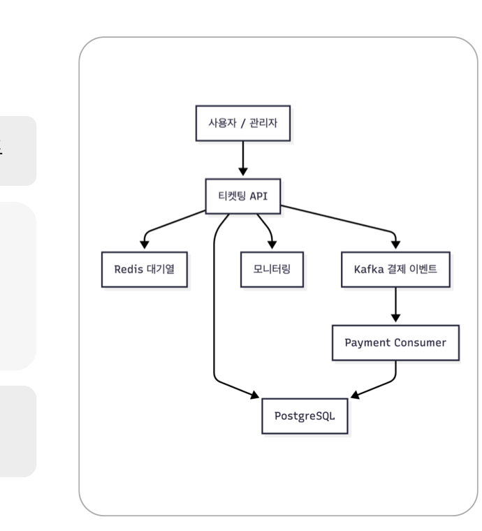

티켓 예매 시스템


개요 📝
학창시절 e스포츠 구단 티켓팅에 실패한 경험에서 출발해, 사용자가 몰리는 순간 시스템이 어떤 기준으로 입장과 처리를 나누어야 하는지를 직접 구현하며 확인한 토이 프로젝트입니다. 단순 성능 향상이 아닌 사용자가 자신의 상태를 알 수 있는 구조를 목표로 설계했습니다.
역할 🙋
- 대기열 / 활성 슬롯 설계 · Redis ZSET 기반 대기열 구성, 활성 슬롯은 누적 요청의 10% 수준 제한
- 결제 흐름 분리 · Kafka 비동기 처리, 멱등성 키와 TTL 가드로 중복 결제 방지
- 관측 환경 구축 · Prometheus + Grafana + JMeter로 혼잡 상황 지표화
Skills 🛠
- Spring Boot, Java
- Redis (ZSET), Apache Kafka
- JMeter, Prometheus, Grafana
대기열 / 활성 슬롯 분리
Redis ZSET
요청이 몰릴 때 모든 사용자가 동일한 처리 흐름에 묶이면, 일부는 처리되고 일부는 타임아웃되는 식으로 상태가 불투명해집니다.
이전 부하 테스트에서는 소켓 자원 부족으로 BindException이 반복 발생한 경험도 있었습니다.
대기열과 활성 슬롯을 분리하고, 활성 슬롯은 누적 요청 인원의 10% 수준으로 보수적으로 제한했습니다. 처리 한계를 넘는 요청은 대기열에 쌓이며, 사용자는 자신의 순번과 처리 상태를 확인할 수 있게 했습니다. JMeter로 20초 동안 누적 요청 200명을 발생시킨 결과, 대기열은 일시적으로 약 172명까지 증가했지만 활성 슬롯은 20명 수준으로 유지되었습니다.
결제 비동기 분리
Kafka입장과 결제가 같은 동기 흐름에 묶이면, 결제 처리가 지연될 때 입장 큐 전체가 함께 막힙니다.
결제 흐름을 Kafka 기반 비동기로 분리해 입장 흐름을 막지 않게 했습니다. 중복 결제를 막기 위해 멱등성 키와 TTL 가드를 적용하고, 재고 차감은 트랜잭션 범위 안에서 처리했습니다.